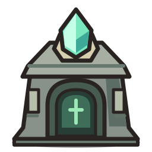
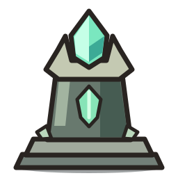
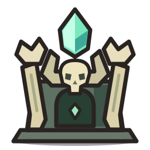
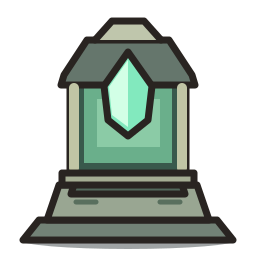

01 · Башня-склеп
Приземистый каменный склеп, широкая арка и кристалл в навершии.

02 · Обелиск душ
Ступенчатое основание, цельный тёмный камень и открытое свечение.

03 · Костяной алтарь
Костяные опоры, небольшой череп и высокий парящий кристалл.

04 · Фонарь смотрителя
Каменный цоколь и крупная клетка-фонарь с кристаллом внутри.
